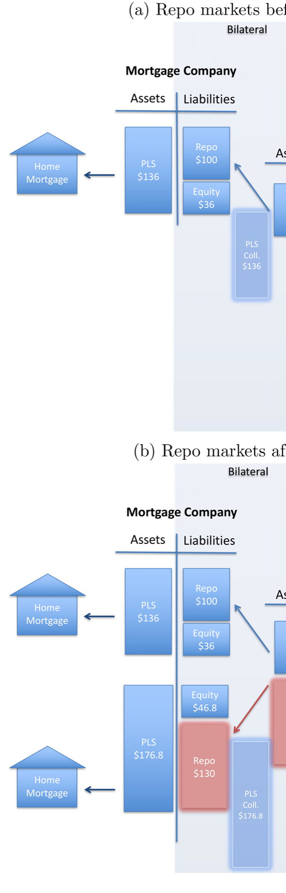
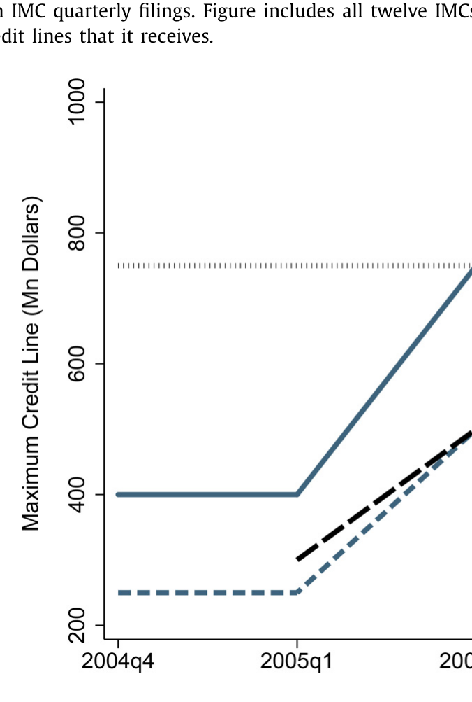
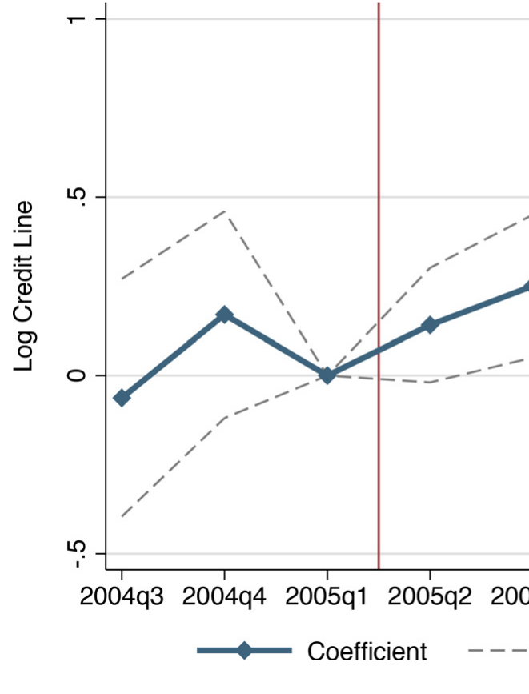
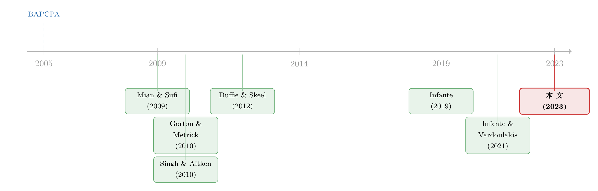

一份抵押品，借出四遍半的钱：一条破产法修正案如何在影子银行里造出货币乘数
本文读的是 Almquist Lewis (2023, Journal of Financial Economics)：2005 年的破产法修正案（BAPCPA）把私标房贷抵押品从「自动冻结」中豁免出来，等于给回购市场的债权人撑了腰；作者用一套把交易商和按揭公司逐笔对上的手工数据证明，债权人权利一被加强，交易商就更敢把同一份抵押品反复再抵押，由此生出一台回购货币乘数——私标抵押品的乘数是国债的 4.5 倍——这台乘数把多出来的信贷一路顺着「交易商 → 按揭公司 → 购房者」的链条灌进了房地产市场，也灌进了 2008 年的那场崩盘。
1 一个被忽略的乘数
每个学过宏观的人都知道传统银行体系里的「货币乘数（money multiplier）」：央行投放一块钱基础货币，银行留下准备金、把剩下的贷出去，下一家银行再留再贷……一轮一轮下来，一块钱撑起了好几块钱的信贷。这是教科书里的故事，干净、收敛、人人会算。
但有一个问题，几乎没人认真问过：影子银行里，有没有一台类似的乘数？
这正是本文的出发点。作者盯上了一条几乎没人讲清楚的资金链：大型证券交易商（securities dealers）借钱给独立按揭公司（independent mortgage companies, IMCs），换来房贷作抵押品；然后，交易商把这同一份抵押品再抵押（rehypothecation）给现金出借方，借出现金，再把现金投回按揭公司……如果这个循环能转好几圈，那么起源于回购（repurchase agreement，简称 repo）市场的一台货币乘数，就被悄悄启动了。
更要命的是一个反转：传统银行的乘数每转一圈钱变少（因为要留准备金），而回购市场这台乘数，因为交易商和按揭公司在「同一份抵押品上能借到的条件不一样」，每一圈反而可能让钱变多。一台会自我膨胀的信贷机器——它的经济后果，此前从未被量化过。
为什么要盯着 IMC？因为危机前，这些不吸收存款的按揭公司贡献了近三分之一的房贷发放，危机后市场份额涨到约一半，而它们的融资结构几乎没变——全靠交易商提供的「仓储信贷额度（warehouse facilities）」续命。谁在给它们供血、怎么供的，过去是一片空白。
2 故事的钥匙：BAPCPA 与「自动冻结」豁免
要证明「债权人权利 → 抵押品再抵押 → 信贷供给」这条因果链，作者需要一个外生冲击。她找到的，是 2005 年美国国会通过的《破产滥用预防与消费者保护法案》（Bankruptcy Abuse Prevention and Consumer Protection Act of 2005，BAPCPA）。
关键在于一个叫「自动冻结（automatic stay）」的破产机制。正常情况下，一家机构破产，它的债权人不能立刻去抢抵押品，得在破产法庭里排队等。BAPCPA 把回购的房贷抵押品从自动冻结里豁免了出来：一旦交易对手破产，最终债权人可以立刻拿走抵押品、不必排队。这就是所谓的「超级优先（super senior）」破产地位。
而本文识别策略的精妙之处，恰恰藏在这条法律的边界里：
- BAPCPA 只影响私标（private-label，即高风险）房贷抵押品；
- 因为机构（agency）房贷抵押品早在 1984 年的《破产修正案》里就已经拿到了豁免。
换句话说，2005 年这道修正案像一把手术刀，只切在「私标房贷抵押品」这一类资产上，对早已豁免的机构抵押品毫无影响。这就为「处理组 vs. 对照组」的比较提供了一条干净的缝。（关于「一旦某类资产被赋予可抵押资格会发生什么」，可参见《央行的「合格清单」：一只债券一旦能抵押，会发生什么？》。）
3 概念框架：一台会膨胀的回购乘数
在跑回归之前，作者先搭了一个概念框架（conceptual framework），把「为什么再抵押会生出乘数、为什么私标抵押品的乘数更大」讲清楚。这套逻辑是全文的灵魂，值得一步步拆开。
设想交易商手里有 1 块钱现金。它把这 1 块钱借给一家按揭公司，对方必须超额抵押，即多压一点抵押品给它做缓冲——记这个超额抵押率为 \(o\)。于是交易商手里多了价值 \(1\times(1+o)\) 的房贷抵押品。
接着，一个自然的动作是：交易商把这份价值 \((1+o)\) 的抵押品再抵押给三方回购（tri-party repo）市场里的现金出借方。但现金出借方也要扣一道「折扣（haircut）」\(h\) 做保护，于是交易商这一轮真正拿回的现金是
$$ (1+o)(1-h). $$
然后，关键的一步来了：交易商把这笔现金再投回按揭公司，开始下一圈。如此往复，第 \(k\) 圈撬动的现金就是 \(\big[(1+o)(1-h)\big]^k\)。把所有圈加总，就得到这条链条创造的总信贷——一个回购货币乘数 \(M\)：
这个式子的直觉，正好对应了引言里那句反转。传统银行的乘数，每一圈的衰减因子是「1 − 准备金率」，远小于 1，钱很快被吃光；而回购市场里，只要交易商收的超额抵押 \(o\) 足够接近它付出的折扣 \(h\)，衰减因子就贴近 1，钱一圈一圈几乎不掉——同样一份抵押品，被反复借出去，乘数自然就大。
而 BAPCPA 做的事，就是压低私标抵押品的折扣 \(h\)：破产时能立刻拿走抵押品，出借人当然愿意少扣一点。\(h\) 一降，乘数 \(M\) 就涨。作者据此估计，BAPCPA 之后，私标房贷抵押品的乘数高达国债的 4.5 倍——这正是图 2 想讲的故事。

Figure 2: Repo money multiplier
正是这个「4.5 倍」的巨大乘数，催生了后文的「处理强度双重差分（treatment intensity difference-in-differences）」设计：那些资产负债表里被 BAPCPA 影响的抵押品占比越高的交易商，就越有动机抢先启动这台乘数——他们被定义为「更被处理（more-treated）」的一方。
4 三步走：把一条因果链钉死
要把「债权人权利 → 信贷供给」证成因果，作者把分析切成层层递进的三步，每一步都对上一步的机制做交叉验证。这是全文最见功力的地方。
第一步：债权人权利真的提高了再抵押吗？（Section 4）
第一个要害问题是：BAPCPA 之后，交易商手里「可再抵押的抵押品（repledgeable collateral）」是不是真的变多了？作者从交易商年报脚注里手工抠出这个数字，做处理强度 DiD。结果是肯定的：更被处理的交易商，其可再抵押抵押品相对更少被处理的交易商显著上升。乘数的「原料」确实多了。
第二步：交易商把多出来的信贷传给按揭公司了吗？（Section 5）
接着，一个自然的问题是：再抵押多了，这些信贷有没有顺着资金链流到按揭公司去？
这一步的识别难点在于——按揭公司本身的借款需求也可能在变（房地产正热），怎么把「交易商的供给」和「按揭公司的需求」分开？作者用的是一招经典的Khwaja and Mian (2008)式设计：同一家按揭公司，同时从多家交易商拿钱。于是可以在「同一家按揭公司内部、跨不同交易商」做比较，把按揭公司层面的需求冲击当作固定效应吸收掉，剩下的差异只能归给交易商的供给。

Figure 6: Maximum credit lines to an example mortgage company
结果很硬：BAPCPA 之后，处理组交易商在同一家按揭公司内部的放贷，相对对照组交易商多增了 29.6%。这个「同公司内、跨交易商」的比较只能证明交易商之间的「信贷替代」，但作者进一步给出证据，指向一个 19.9% 的整体信贷供给增加。

Figure 7: Effect of dealer treatment on credit lines to independent mortgage
更耐人寻味的是放贷的结构变化：交易商不是简单地给传统房贷多放钱，而是系统性地放松了契约约束——他们增加了对「湿（wet，即无担保）」信贷额度的资金，以及对气球贷（balloon）、纯息贷（interest-only）、乃至逾期 120–180 天房贷作抵押的额度。这与「BAPCPA 抬高了抵押品的预期回收价值、于是交易商敢接更脏的抵押品」完全一致。
第三步：按揭公司又把信贷传给了购房者吗？（Section 6）
最后一问：这股多出来的信贷，最终有没有变成更多的房贷、更多的房价？
这里有个数据限制——CoreLogic 等数据无法识别具体哪家 IMC 发放了哪笔贷款。作者于是换了一个口径：用 2004 年（BAPCPA 前一年）各县 IMC 的市场份额，把县分成「高暴露」与「低暴露」，再做处理强度 DiD。逻辑是：IMC 份额越高的县，越能吃到这股供给红利。
事前检验很关键：BAPCPA 之前，高 IMC 份额县与低份额县在房贷量和特征上没有统计上显著的差异——平行趋势站得住。而 BAPCPA 之后：
- 事前 IMC 市场份额每高 10%，2005–2006 年的房贷发放量多增 2.7%；
- 发放结构明显偏向气球贷与浮动利率房贷（ARM），含纯息 ARM——这些是「近优级（near prime）/另类（Alt-A）」产品，不是次贷，却结构性地更脆；
- 在冲击前后五个月的窗口里，边际违约风险率（marginal default hazard rate）从 BAPCPA 前的 13% 暴涨到之后的 70%；
- 事前 IMC 份额每高 10%，2005–2006 年房价多涨 2.1%，而 2008 年房价多跌 3.3%——一台典型的「先吹后崩」放大器。
三步走完，一条从破产法条文一直到购房者门口的因果链，被一节一节地钉死了。这种「环环相扣、每步互证」的写法，比单跑一个漂亮回归要扎实得多。（关于「信贷供给如何吹大、又如何反噬房价」，《加息真正掐断的，是那条「过线」的房贷》从货币政策的另一端讲了同一个机制。）
5 数据：把一条看不见的链条手工拼出来
本文最被低估的贡献，其实是数据本身。回购市场在 2008 年前几乎没有公开数据（Baklanova et al., 2015），交易商和 IMC 之间「谁借给谁」更是一笔糊涂账。作者硬是把它拼了出来：
- IMC 端：手工采集 12 家最大的公众 IMC 在
2004Q3–2006Q3的仓储信贷额度，逐笔记录每家额度由哪些交易商提供、上限多少。这 12 家在 2006 年贡献了全部 IMC 房贷发放的 59%；仓储回购额度平均占到 IMC 资产的 61%。 - 交易商端：识别出 29 家给 IMC 供血的交易商，其中 16 家是一级交易商（primary dealers）；为其中 19 家收集了年报脚注里的可再抵押抵押品数据。再叠加纽约联储的 FR 2004 周度调查（securities out / securities in，即担保借入与担保贷出）。
- 抵押品与价格：CoreLogic ABS、Inside Mortgage Finance 标出各交易商 2004 年私标 MBS 的承销暴露；Bloomberg Barclays 的机构 MBS 指数（
LD10OAS）与私标 MBS 指数（BNA10AS）追踪二级市场收益率。 - 房贷与房价：HMDA 构造县级 IMC 市场份额；CoreLogic LLMA（每年约
570万笔房贷，覆盖全美约 45%）看贷款特征与违约；Zillow ZHVI 看县级房价。
正是「同一家交易商的可再抵押抵押品」能接上「同一家交易商对某 IMC 的放贷」，这条链才第一次被打通——这是本文一切实证的物理基础。
6 文献脉络
这篇论文站在三股文献的交汇处。
第一股，是抵押品再抵押与回购乘数的理论。 Infante (2019) 建模了交易商如何用同一份抵押品在回购出借方与借入方之间做中介；Singh、Gottardi 等人指出这种中介会催生回购市场的货币乘数。但这股文献几乎都在讲国债与机构抵押品的乘数——本文第一次指出，私标抵押品的乘数比安全资产更大，并且把这条乘数从二级市场一路接到了一级房贷市场。
第二股，是回购的法律地位之争。 围绕「回购该不该享有破产优先权」，Lubben (2010)、Roe (2010)、Edwards and Morrison (2005) 各执一词；Duffie and Skeel (2012) 列出了优先权的四大风险（削弱监督、太大而不能倒、低效地偏向短期回购、火线抛售）。本文给这四大风险各自提供了第一份实证证据。

第三股，是金融危机的成因之辩。 从 Mian and Sufi (2009) 的「信贷供给推升房价」，到 Gorton and Metrick (2012) 的「回购挤兑（run on repo）」，再到 Singh and Aitken (2010) 估计再抵押让危机期间交易商杠杆比标准口径高出 50%，本文把这些散落的拼图串了起来：它解释了为什么相对不大的 MBS 损失能在两周内把 13 家系统重要机构里的 12 家逼到崩溃边缘——因为再抵押造出的「关键互联（critical interlinkages）」，是建立在高风险抵押品之上的。
7 评论与延伸（Q&A + 研究方向）
(a) 几个可能的疑问
Q：BAPCPA 是全国性立法，怎么能算「外生冲击」？
关键不在立法本身外生，而在它只切私标抵押品、不碰早已豁免的机构抵押品。识别用的是这条边界——以及交易商资产负债表里私标抵押品占比的横截面差异（处理强度），不是简单的前后对比。
Q：第二步用「同一家 IMC、跨交易商」比较，最多只能说明交易商之间的替代，不能说明总信贷增加吧？
作者自己也承认这一点——within-IMC 设计严格说只识别出 29.6% 的「信贷替代」。所以她另用证据论证了 19.9% 的整体供给增加。但后者不如前者干净，这是诚实的让步，也是读者该存疑的地方。
Q：房价那一步换了识别口径（county × IMC 份额），可信度是不是打了折？
是的，第三步因为数据无法识别个体 IMC，退而用县级 IMC 份额做处理强度。它的可信度系于「事前高/低份额县无显著差异」这条平行趋势——作者做了检验，但县级份额可能与其他县级特征相关，这是最该追问的内生性来源。
Q：违约率从 13% 飙到 70%，是不是太夸张了？
这是「冲击前后五个月窗口」内的边际违约风险率，针对的是新增的、结构更脆的近优级/ARM 产品，而非存量房贷的平均违约率，所以量级看着惊人但口径很窄，不宜直接外推到整个市场。
Q：本文和「次贷危机」的主流叙事冲突吗？
不冲突，但补了一刀。它呼应 Albanesi et al. (2017) 的发现——危机违约其实集中在优级而非次贷段。本文给出机制：那些信用分高、被归为「prime」的近优级/纯息产品，结构上更易违约，而它们的扩张正是被这台回购乘数喂大的。
Q：这套机制只对房贷成立吗？
作者明确提醒，商业地产与 CLO 也采用了类似的融资结构。换句话说，「债权人权利 → 再抵押 → 乘数 → 信贷扩张」这条链，原则上可以复制到任何用风险抵押品做回购的市场。
(b) 几个可能的研究问题与提案
1. 把这台乘数搬到公司债 / CLO 市场。
【经济故事】本文的链条是「私标房贷 → IMC」，但 CLO、杠杆贷款同样靠回购融资、同样用高风险抵押品。债权人权利的变化是否在公司信用市场里造出过类似乘数？【可行性】中。需要把交易商对 CLO 经理的回购额度逐笔对上（类似本文的手工采集），数据采集是主要瓶颈；识别可沿用 BAPCPA 的资产类别边界。
2. 外资持有人与再抵押链条。
【经济故事】危机后大量私标/机构抵押品由海外机构持有，外资在折扣、再抵押意愿上与本土交易商系统不同。外资持有比例的变化，会不会改变某类抵押品的乘数与流动性？【可行性】中低。需要 TIC 持仓数据叠加回购市场抵押品流向，外资的再抵押行为难以直接观测，识别需借助持有人国别的外生变动。
3. 抵押品「脏化」与流动性的反身性。
【经济故事】本文发现 BAPCPA 后交易商放松契约、接更脏的抵押品（湿额度、逾期房贷）。当抵押品质量内生地随债权人权利下降时，回购市场的流动性是先升后崩的——能否量出这条「流动性反身性」曲线？【可行性】中。可用 LLMA 的逐月表现数据构造抵押品质量指数，叠加 Bloomberg Barclays 的私标 MBS 收益率做事件研究。
4. 自动冻结豁免的福利账。
【经济故事】Duffie and Skeel (2012) 列了优先权的四大风险，本文证实了风险的存在，但没算净福利——多出来的信贷供给（事前的好）要和系统性脆弱（事后的坏）相抵。【可行性】低。需要一个把回购乘数嵌进一般均衡的结构模型来做反事实，识别与校准都很重，但理论价值高。
8 我的判断与参考文献
贡献。 这篇论文最大的价值，是把一条「人人猜得到、却没人测得出」的影子银行资金链，用手工数据第一次接通，并给「债权人权利 → 再抵押 → 货币乘数 → 信贷供给 → 房价」这条长链上的每一环都钉了一颗钉子。把回购乘数从国债推广到私标抵押品、并指出后者乘数更大（4.5 倍），是对再抵押文献的实质推进；而「同一家 IMC、跨交易商」的设计，则是把 Khwaja-Mian 的思想漂亮地搬进了回购市场。
对识别的担忧。 三步里，第一、二步（处理强度 DiD + within-IMC）相当扎实，但第三步从「交易商-IMC」退到「县级 IMC 份额」，识别强度明显下了一个台阶——县级份额与其他县级特征的相关性，是我最想看到作者进一步排除的。此外，19.9% 的「整体供给增加」依赖于 within-IMC 之外的辅助论证，不如 29.6% 的替代效应干净。
后续想看的。 一是把这台乘数的崩溃端补完整——本文讲了「先吹」，2008 年「后崩」的 3.3% 房价跌幅只是一个侧影，回购挤兑如何沿着同一条再抵押链反向传染，值得一篇姊妹篇。二是福利账：自动冻结豁免到底是净增还是净减社会福利，需要一个结构模型来回答。（关于「利率长跌如何系统性地喂大影子银行」，可参见《利率长跌二十年，如何亲手喂大了影子银行》。）
参考文献
- Almquist Lewis, B. (2023). Creditor rights, collateral reuse, and credit supply. Journal of Financial Economics 149(3), 451–472.
- Copeland, A., Martin, A., Walker, M. (2014). Repo runs: evidence from the tri-party repo market. Journal of Finance 69(6), 2343–2380.
- Duffie, D., Skeel, D.A. (2012). A dialogue on the costs and benefits of automatic stays for derivatives and repurchase agreements. U of Penn, Inst for Law & Econ Research Paper (12-02).
- Edwards, F.R., Morrison, E.R. (2005). Derivatives and the bankruptcy code: why the special treatment. Yale Journal on Regulation 22, 91.
- Gorton, G., Metrick, A. (2012). Securitized banking and the run on repo. Journal of Financial Economics 104(3), 425–451.
- Infante, S. (2019). Liquidity windfalls: the consequences of repo rehypothecation. Journal of Financial Economics 133(1), 42–63.
- Infante, S., Vardoulakis, A.P. (2021). Collateral runs. Review of Financial Studies 34(6), 2949–2992.
- Khwaja, A.I., Mian, A. (2008). Tracing the impact of bank liquidity shocks: evidence from an emerging market. American Economic Review 98(4), 1413–1442.
- Krishnamurthy, A., Nagel, S., Orlov, D. (2014). Sizing up repo. Journal of Finance 69(6), 2381–2417.
- Mian, A., Sufi, A. (2009). The consequences of mortgage credit expansion: evidence from the US mortgage default crisis. Quarterly Journal of Economics 124(4), 1449–1496.
- Singh, M., Aitken, J. (2010). The (sizable) role of rehypothecation in the shadow banking system. IMF Working Paper.